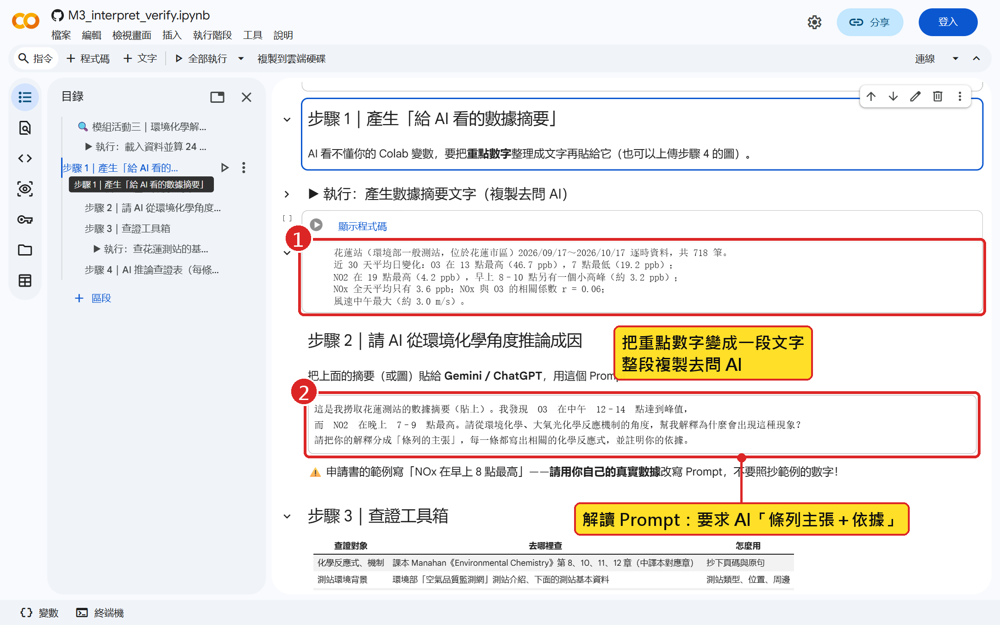
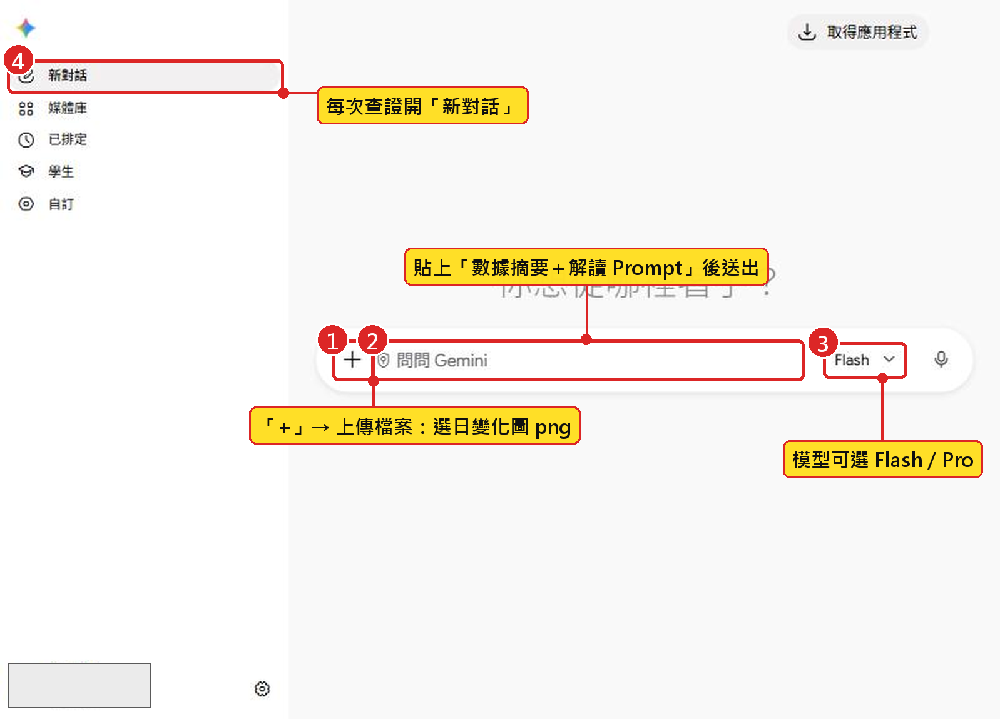
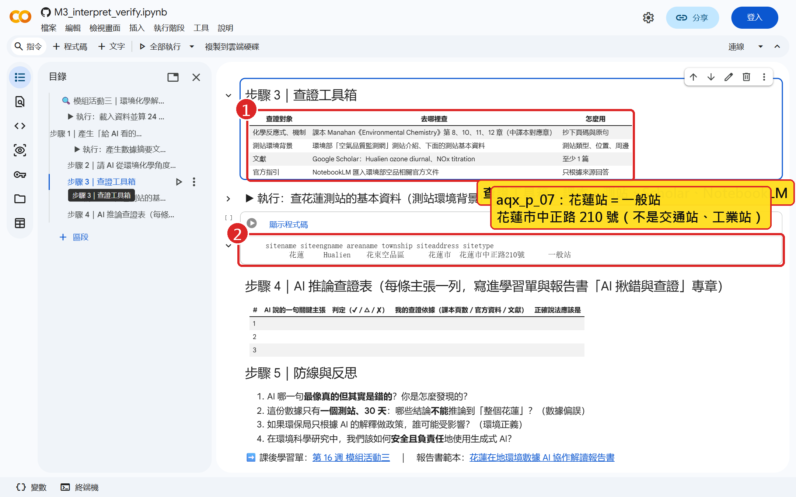
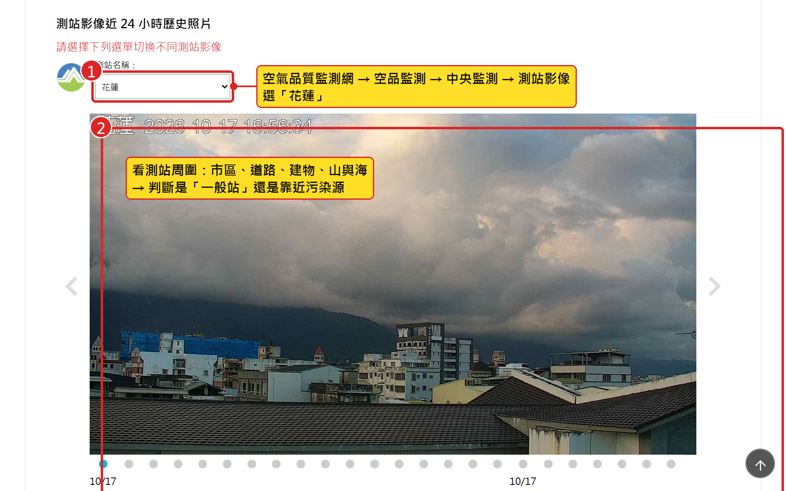
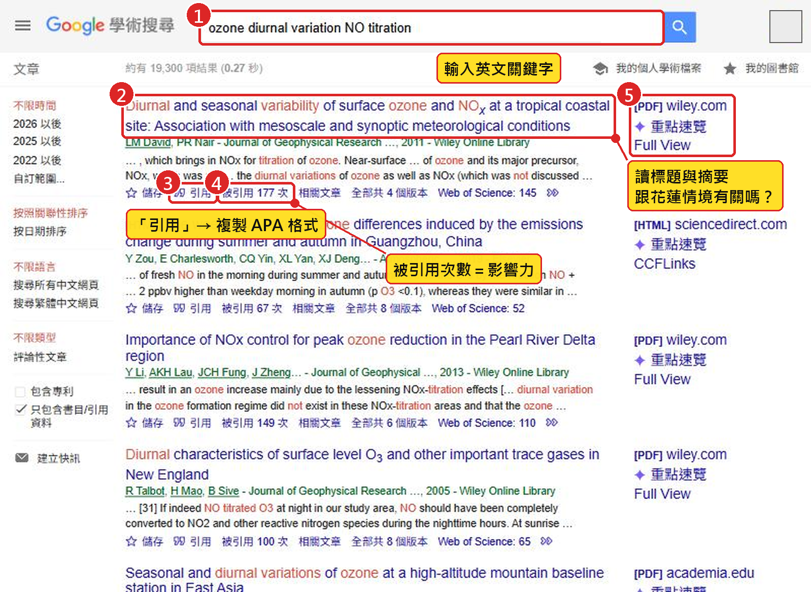
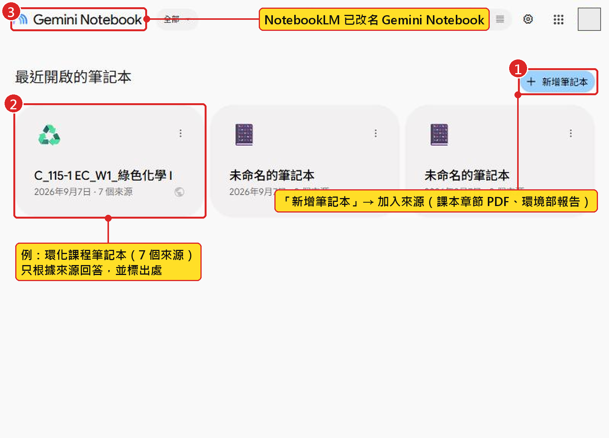
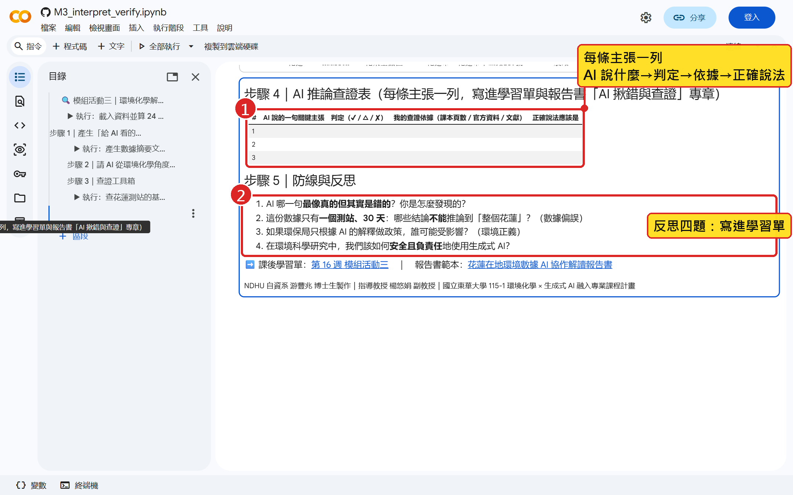
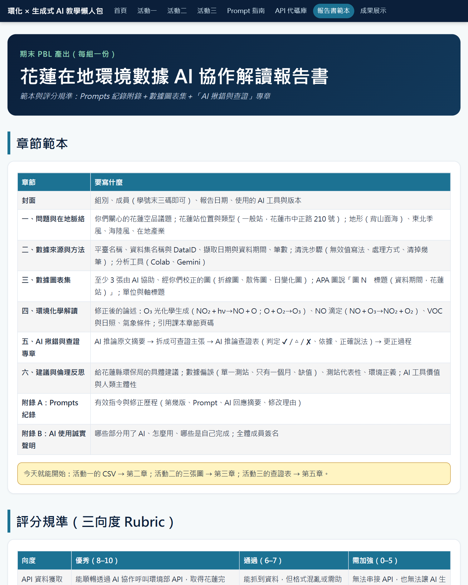
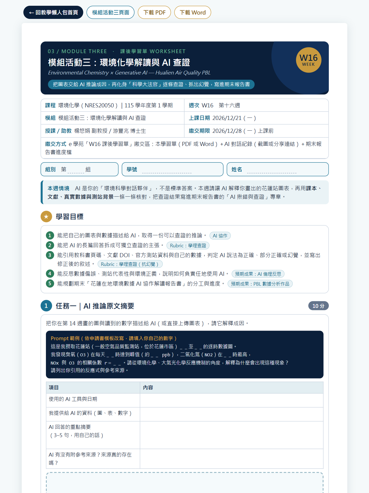

模組活動三｜2026/12/21（一）第 16 週 14:10–16:10
環境化學解讀與 AI 幻覺查證
把花蓮站圖表交給 AI 推論成因，再用課本、測站背景與真實數據逐條查證
🔑 API 金鑰＝帳號密碼：只放在 Colab「密鑰」，不要寫進程式碼、不要貼給 AI、截圖前先遮住。
任務目標
今天的身分：科學大法官｜數據科技特派員第三次任務
情境任務（申請書・作業設計）：AI 科學特助提出化學解釋，你負責查證、揪出幻覺、寫出正確論述
任務目標（今天 2 小時要做到）
- ① 把數據摘要與圖表交給 AI，請它推論成因
- ② 把 AI 回答拆成 5–8 條可查證的主張
- ③ 用課本核對光化學反應機制
- ④ 用測站背景與真實數據核對
- ⑤ 填完 AI 推論查證表（≥ 3 列）
- ⑥ 寫出修正後的論述與 AI 使用反思
AI 做什麼／你做什麼（人類主體性）
- AI 協作 環境科學對話夥伴：初步推論成因、提供聯想與結構
- 你負責 查課本、查測站、查文獻：逐條核對
- 你負責 判定 ✔／△／✘，寫出正確說法
- 期末產出 報告書「AI 揪錯與查證」專章的草稿
- 原則 證據說了算，不是語氣說了算
完整步驟流程圖
1
餵資料
14:15–14:35
- Colab 產生數據摘要
- 先自己讀圖
- 原版 vs. 真實觀測版 Prompt
- 上傳圖＋摘要給 Gemini
2
拆主張
14:35–14:46
- 一條主張＝一句可判對錯
- 四類：機制／數據／背景／文獻
- 幻覺示範：AI vs. 數據
3
查課本
14:46–14:56
- 光化學 O₃ 生成三反應
- VOC／HOx 自由基鏈
- NO 滴定與夜間化學
- 抄章節、頁碼、原句
4
查測站
14:56–15:31
- aqx_p_07 測站基本資料
- 空品監測網測站介紹
- （休息）海陸風、背山面海
- Scholar、NotebookLM
5
查證表
15:31–15:54
- ✔ 正確／△ 部分／✘ 錯誤
- 捏造型幻覺
- 小組實作 14 分鐘
- 各組分享 1 條
6
反思
15:54–16:01
- 修正環化論述
- 數據偏誤、環境正義
- 期末報告書說明
上方灰色列會隨捲動標示你現在在哪一步；點任一步可直接跳過去。
上課前先知道
今天怎麼評量？Rubric 第三向度：環境化學學理查證
申請書・學習成果與評量方式（三向度 Rubric）：M1 API 資料獲取 → M2 AI 輔助視覺化 → M3 學理查證（抗幻覺能力）
| 評量項目 | 優秀（8–10 分） | 通過（6–7 分） | 需加強（0–5 分） |
|---|---|---|---|
| 環境化學學理查證（抗幻覺能力） | 能精準指出 AI 至少一處邏輯、數據或化學機制漏洞，並引用權威文獻／教科書修正 | 被動接受 AI 說法，查證流於形式，未能辨識化學機制上的細微幻覺 | 完全盲信 AI 推論，未做任何查證，報告出現嚴重學理錯誤 |
| 今日證據 | ① 主張清單 5–8 條 ② 查證表 ≥ 3 列，每列有依據 | ③ 至少 1 列 △／✘ 並修正 ④ 修正後的論述一段 | ⑤ 反思四題＋AI 使用誠實聲明 |
| 對應預期成果 | 質化：分辨 AI 工具價值與人類主體性；倫理反思（數據偏誤、環境正義） | 量化：每組報告書的「AI 揪錯與查證」專章 | 教學擴散：查證表與 Prompt 開源於懶人包 |
什麼是 AI 幻覺？四種類型與今天的防線
申請書・模組活動三步驟二：AI 解釋複雜化學機制時，可能把自由基反應順序搞錯，或給出錯誤的化學常數
什麼是 AI 幻覺
- 說得流暢、自信，內容卻與事實不符
- 語言模型在預測「下一個字」，不是在查資料
- 越像課本典型的情境，越容易被直接套用
- Gemini、ChatGPT 都會發生
四種常見類型
- 照抄前提 Prompt 寫錯，它順著錯
- 套用典型 把西部大都市套到花蓮
- 捏造 假文獻、假數字、錯單位
- 機制錯誤 反應順序顛倒、亂給常數
今天的防線
- 一條主張查一次
- 三方對照：課本／測站背景／你的數據
- 再加文獻（Scholar）與 NotebookLM
- 查不到＝不能用
AI 倫理：數據偏誤、測站代表性與環境正義
申請書（六）預期成果：在報告中展現成熟的 AI 倫理反思（如數據偏誤與環境正義）
數據偏誤
- 只有 1 個測站、30 天、秋季
- 缺值：O₃ 6 筆、NO₂／NOx 各 8 筆
- NO₂ 以 1 ppb 為單位記錄；日變化只差 1–3 ppb
- 結論只代表「這一站、這段時間」
測站代表性與環境正義
- 花蓮站在市區：代表市區居民的生活環境
- 和平工業區周邊、縱谷農業區、部落：不在本站代表範圍
- 沒有測站 ≠ 沒有污染
- 誰的空氣被看見？誰沒有？
責任與誠實
- AI 的解釋不能直接變成政策
- 寫進報告的每一句都要有證據
- 不確定就寫「需再查證」
- AI 生成內容要標示；隱瞞才扣分
1把圖表與數據交給 AI
步驟 1-1｜在 Colab 產生「給 AI 看的數據摘要」

跟著做
- 1懶人包 m3 頁 → Open in Colab
- 2複製到雲端硬碟，執行代碼庫格
- 3執行「載入資料並算 24 小時平均」
- 4執行「產生數據摘要文字」
- →複製印出的摘要，等一下貼給 AI
💡 預設讀懶人包花蓮備援資料（9/17–10/17，718 筆）；也可換成你上週清洗好的 hualien_clean.csv。
步驟 1-2｜問 AI 之前，先自己讀圖：花蓮站日變化
上週的日變化雙軸圖（2026/09/17–10/17，718 筆逐時平均）

先寫下你看到的（不是 AI 說的）
- O₃ 最高 13 時，平均 46.7 ppb（11–15 時都 > 45）
- O₃ 最低 7 時，19.2 ppb
- NO₂ 最高 19 時，4.2 ppb；9–10 時小峰 3.2
- NOx 全天平均 3.6 ppb；19 時最高 5.1
- 相關 NOx–O₃ r＝0.06
- 最高值 O₃ 82 ppb：10/14 凌晨 0 時那一筆
步驟 1-3｜申請書原版 Prompt（先當「對照組」）
這是我撈取花蓮測站春季的數據圖。我發現每天下午 1 點到 3 點，臭氧（O3）濃度會達到峰值，而氮氧化物（NOx）在早上 8 點最高後開始下降。請從環境化學、大氣光化學反應機制的角度，幫我解釋為什麼會出現這種現象？
- 為什麼先用它 申請書設計的範例，當「對照組」
- 注意前提 「春季」「NOx 早上 8 點最高」都是假設
- 花蓮真實 秋季資料；NOx 最高在晚上 7 點左右
- 觀察重點 AI 會不會照單全收這些前提？
步驟 1-4｜用真實觀測改寫的 Prompt（Colab 範本步驟 2）
【數據摘要】（貼上 Colab 步驟 1 印出的文字）
這是我撈取花蓮測站的數據摘要（如上）。我發現 O3 在中午 12–14 點達到峰值，而 NO2 在晚上 7–9 點最高。請從環境化學、大氣光化學反應機制的角度，幫我解釋為什麼會出現這種現象？
請把你的解釋分成「條列的主張」，每一條都寫出相關的化學反應式，並註明你的依據。
- 改了什麼 前提換成你圖上的真實觀測
- 多一句 要求「條列主張＋反應式＋依據」
- 附上 數據摘要文字＋日變化雙軸圖
- 記錄 兩版 Prompt 都抄進報告書附錄
步驟 1-5｜在 Gemini 上傳圖表，兩版 Prompt 各問一次

跟著做
- 1開 Gemini，按「新對話」
- 2按「＋」上傳日變化雙軸圖
- 3貼原版 Prompt → 存下回答
- 4再開新對話：摘要＋真實觀測版
- →兩份回答存進共用文件，標版本
💡 組內分工：一人跑原版、一人跑真實版、其他人記錄差異。不要上傳含姓名、學號的檔案。
2拆解成可查證的主張
步驟 2-1｜把 AI 的長篇回答，拆成可查證的主張
Colab 範本步驟 2：要求 AI「條列主張」，就是為了這一步
一條主張＝一句可判對錯的話
- ✘「臭氧的形成很複雜」：太空泛，不能查
- ✔「NO₂ 光解產生 O，O 與 O₂ 結合成 O₃」
- ✔「花蓮 NOx 在早上 8 點最高」
- 每條只講一件事；有數字就保留數字
- 保留 AI 原句，不要自己改寫
四類主張 → 去哪裡查
- 機制 反應式、反應順序 → 課本
- 數據 時間、濃度、相關 → 你的數據
- 背景 測站、地形、產業 → aqx_p_07、監測網
- 文獻 「研究指出…」→ Scholar、DOI
步驟 2-2｜幻覺示範：同一段原版 Prompt，AI 回答 vs. 真實數據
示範：AI 常見說法拆成 5 條（各組實際回答可能不同）；數據＝花蓮站 2026/09/17–10/17
| AI 回答（原版 Prompt 的常見說法） | 花蓮真實數據說 | 判定 |
|---|---|---|
| ① NOx 在早上 8 點通勤尖峰最高 | NOx 19–21 時最高（5.1 ppb）；早上 9–10 時只是小峰 | ✘ 照抄前提 |
| ② 汽車排放大量 NOx，光解後下午生成 O₃ | NOx 平均僅 3.6 ppb，O₃ 平均 34.7 ppb：本地 NOx 解釋不了 | △ 機制對、量級不符 |
| ③ O₃ 峰值出現在下午 1–3 點 | 13 時最高 46.7 ppb（11–15 時為平台） | ✔ 大致正確 |
| ④ NOx 與 O₃ 明顯負相關 | NOx–O₃ 相關係數 r＝0.06 | ✘ 與數據矛盾 |
| ⑤ 春季日照強，所以光化學旺盛 | 資料是秋季（9–10 月） | ✘ 照抄前提 |
動手做｜把兩份 AI 回答拆成主張清單
任務（小組）
- 兩份回答各拆成 5–8 條主張
- 每條標類型：機制／數據／背景／文獻
- 貼進 notebook 或共用文件，編號 1、2、3…
- 標出兩份回答「說法不同」的地方
完成標準
- ✔ 每條一句話、只講一件事
- ✔ 至少 1 條機制、1 條數據主張
- ✔ 標出 AI 引用的文獻或數字
- 提早完成：先猜哪幾條最可疑
⏱ 操作 8 分鐘
3對照教科書學理
步驟 3-1｜課本學理：O₃ 怎麼生成、怎麼被消耗？
課本大氣化學（Ch 8–12）：查證「機制」主張的標準答案
O₃ 的光化學生成
- NO₂ + hν → NO + O
- O + O₂ + M → O₃ + M（M＝第三體）
- NO + O₃ → NO₂ + O₂（滴定）
- 三式循環：沒有「淨」生成（光穩定狀態）
淨生成：VOC／HOx 自由基鏈
- RH + OH → R + H₂O；R + O₂ → RO₂
- RO₂ + NO → RO + NO₂
- HO₂ + NO → OH + NO₂
- NO 轉成 NO₂ 卻不消耗 O₃ → O₃ 累積
夜間與清晨
- 無光解：O₃ 只消耗、不生成
- NO₂ + O₃ → NO₃ + O₂（夜間）
- 地表乾沉降＋夜間邊界層變淺
- 查證時抄下：章節、頁碼、原句
步驟 3-2｜查證示範①：「NOx 越高，O₃ 越低」？
格式：AI 說 → 課本說 → 數據說 → 判定（上週的 NOx–O₃ 散佈圖）

查證示範①
- AI 說 「NOx 越高 O₃ 越低，明顯負相關，這是 NO 滴定。」
- 課本說 NO + O₃ → NO₂ + O₂ 確實存在；NOx 很高的都市最明顯
- 數據說 散佈圖很散，r＝0.06；花蓮 NOx 平均僅 3.6 ppb
- 判定 ✘ 機制存在，套在花蓮站的結論錯誤
- 正確說法 花蓮 NOx 低，O₃ 主要受日照與區域背景控制
- 類型 套用典型型幻覺
動手做｜翻課本：核對 AI 的反應式與機制
任務（每人）
- 挑出清單中的「機制」主張
- 翻課本 Ch 8–12 大氣化學相關節次
- 抄下：章節、頁碼、原句或反應式
- 比一比：AI 寫的和課本一樣嗎？
常見機制幻覺
- 漏掉第三體 M（簡化寫法要註明）
- 說 NO₂ 光解在夜間也會進行
- 把 O₃ 說成汽車直接排放（一次污染物）
- 自由基反應順序顛倒、常數亂給
⏱ 查課本 7 分鐘
4比對測站環境背景
步驟 4-1｜Colab 查測站基本資料（aqx_p_07）

跟著做
- 1執行「查花蓮測站的基本資料」
- 2需 Colab 密鑰 MOENV_API_KEY
- 3sitetype：一般站
- 4siteaddress：花蓮市中正路 210 號
- →沒金鑰：程式會印出備援說明
💡 aqx_p_07＝空氣品質監測站基本資料。測站類型決定它代表什麼：一般站 ≠ 交通站 ≠ 工業站。
步驟 4-2｜空氣品質監測網：花蓮測站介紹頁

跟著做
- 1開環境部「空氣品質監測網」
- 2找測站介紹：花東空品區 → 花蓮
- 3看照片、周邊環境、設站說明
- 4記下：測站類型、空品區、周邊
- →截圖放進報告書「在地脈絡」
💡 網頁也是來源：引用要寫網站名稱、頁面名稱、擷取日期；照片與圖要註明出處。
步驟 4-3｜測站背景 × 數據：花蓮的在地脈絡
申請書・學生獨立完成：結合地形（中央山脈與海岸山脈）、季風（東北季風）、地方產業進行綜合判斷
花蓮站的身分（aqx_p_07）
- siteid 63，一般站
- 花蓮市中正路 210 號（市區）
- 花東空品區；非交通站、非工業站
- 代表市區居民的生活環境
地形與氣象（數據算出來的）
- 背山面海：西側山脈、東臨太平洋
- 白天吹東風（海風），中午約 3 m/s
- 夜間轉西南風（陸風），約 1.5 m/s
- 10 月起東北季風逐漸增強
對解讀的影響
- 海風帶進海上空氣：稀釋本地 NOx
- 夜間風弱、邊界層低：NO₂ 累積
- 高值日要問：本地生成還是傳輸？
- 一般站結論 ≠ 工業區周邊
步驟 4-4｜查證示範②：用測站背景核對 AI 的說法
示範：AI 常見說法（各組實際回答可能不同）
| AI 說 | 測站背景說 | 數據說 | 判定 |
|---|---|---|---|
| NOx 主要來自測站旁繁忙幹道與工業排放 | 一般站：非交通站、非工業站 | NOx 平均 3.6 ppb，濃度很低 | ✘ 背景錯誤 |
| 和平水泥專區排放直接影響花蓮站 | 和平在秀林鄉北端，不在測站周邊 | 單站資料無法判斷來源 | △ 無法證實 |
| 白天海風把污染吹走，所以午後 O₃ 低 | 面向太平洋，白天吹東風（海風） | 午後 O₃ 反而最高（46.7 ppb） | ✘ 與數據矛盾 |
| 夜間 O₃ 下降是 NO 滴定與無光照 | 市區站，夜間仍有交通 | 7 時最低 19.2；夜間 NO 僅約 0.5 ppb | △ 還有地表沉降 |
步驟 4-5｜Google Scholar：找得到、DOI 打得開才算數

跟著做
- 1開 scholar.google.com
- 2輸入關鍵字（見下方提示）
- 3點標題看摘要、期刊、年份
- 4用 doi.org 打開 DOI 確認存在
- →篇名＋DOI 寫進查證表
💡 關鍵字：ozone diurnal variation NO titration（可加 Taiwan）。AI 給的文獻找不到＝無法證實。
步驟 4-6｜NotebookLM：只根據你給的來源回答

跟著做
- 1開 NotebookLM，新增筆記本
- 2加入來源：課本章節、官方空品文件
- 3貼一條主張：「根據來源正確嗎？」
- 4點引用編號，核對原文
- →來源沒寫到＝無法證實
💡 NotebookLM 只依你上傳的來源回答，適合當查證對照。課本與講義僅限課程內使用，勿公開分享。
5填寫 AI 推論查證表
步驟 5-1｜AI 推論查證表：怎麼填、怎麼判定

跟著做
- 1一條主張一列：抄 AI 原句
- 2判定：✔ 正確／△ 部分／✘ 錯誤
- 3依據：頁碼、測站、數據、DOI
- 4正確說法：用自己的話寫
- →查不到：註明「無法證實」
💡 看證據不看語氣：AI 說得越肯定，越要查。至少 1 列 △ 或 ✘，才算完成揪錯。
步驟 5-2｜捏造型幻覺：最像真的五種
申請書・作業設計：「AI 揪錯與查證」專章要列出 AI 的錯誤推論，以及你如何發現並更正
| 類型 | AI 可能這樣說 | 怎麼抓 | 正確說法／判定 |
|---|---|---|---|
| 假引用 | 「根據某某等（20XX）對花蓮臭氧的研究…」 | Scholar 搜篇名；doi.org 開 DOI | 找不到＝無法證實，不可引用 |
| 錯單位 | 「O₃ 平均 46.7 μg/m³」 | 看資料欄位單位：ppb | 1 ppb O₃ ≈ 2.0 μg/m³（25 °C、1 atm） |
| 錯背景 | 「花蓮站旁有大型工業區」 | aqx_p_07：sitetype、地址 | ✘ 市區一般站（中正路） |
| 錯時間 | 「82 ppb 最高值出現在午後強日照」 | 回原始逐時資料查 | ✘ 10/14 凌晨 0 時；夜間要查傳輸 |
| 錯反應式 | 「NO + O₃ 是生成臭氧的反應」 | 對照課本反應式 | ✘ NO + O₃ 是消耗 O₃（滴定） |
動手做｜小組完成 AI 推論查證表
任務（小組）
- 從主張清單挑 3–5 條，每人至少 1 條
- 每條至少一個依據：課本／測站／數據／文獻
- 填進 Colab 步驟 4 查證表
- 同步寫進學習單與報告書專章草稿
完成標準
- ✔ 查證表 ≥ 3 列，每列都有依據
- ✔ 至少 1 列判定 △ 或 ✘
- ✔ 依據可回溯：頁碼、網址、DOI
- ✔ 推派 1 條「最像真的幻覺」
⏱ 操作 14 分鐘
小組分享｜每組一條「最像真的幻覺」
每組 1 分鐘，講三件事
- ① AI 原本說了什麼（原句）
- ② 你們用哪個證據發現它錯了
- ③ 正確說法是什麼
聽的同學要做
- 記下別組抓到的幻覺類型
- 有疑問就問：這個證據夠嗎？
- 投票選出本週「最佳揪錯」
⏱ 分享 5 組
6修正、倫理反思與報告書
步驟 6-1｜修正被 AI 誤導的觀念，重寫環化論述
申請書・模組活動三步驟三：成果微調與防線建立
修正後的論述（範例，請用你們的數據重寫）
- ① O₃ 11–15 時維持 > 45 ppb、13 時最高：日照驅動光化學生成，加上白天邊界層混合
- ② 7 時最低（19.2 ppb）：夜間無光解，O₃ 被 NO 滴定與地表沉降消耗
- ③ NO₂ 19 時最高（4.2 ppb）：日落後不再光解，邊界層變淺而累積
- ④ NOx 低（3.6 ppb）、r＝0.06：O₃ 多受區域背景影響
- ⑤ 10/14 凌晨 82 ppb：非本地光化學，需再查區域傳輸
寫法要點
- 每一句都有數據或課本依據
- 用「可能」「需再查證」標示不確定
- 寫明資料限制：一站、30 天、秋季
- 附上反應式與頁碼
動手寫｜模組學習反思：安全且負責任地使用 AI
反思四題（寫進學習單）
- ① AI 哪一句最像真的、其實是錯的？你怎麼發現的？
- ② 一個測站、30 天：哪些結論不能推到全花蓮？（數據偏誤）
- ③ 若環保局只依 AI 的解釋做政策，誰可能受影響？（環境正義）
- ④ 在環境科學研究中，如何安全且負責任地使用生成式 AI？
寫作提示
- 每題舉一個今天的例子
- 數據偏誤：測站代表性、缺值、季節
- 環境正義：誰被看見、誰被忽略
- 寫「我會怎麼做」，不只寫「AI 不可靠」
⏱ 先寫 4 分鐘
期末 PBL：花蓮在地環境數據 AI 協作解讀報告書
申請書・作業設計（3）產出形式：Prompts 紀錄附錄＋數據圖表集＋「AI 揪錯與查證」專章

報告書章節與繳交
- 一 問題與在地脈絡：議題、測站、地形季風產業
- 二 數據來源與方法：API、DataID、擷取日期、清洗
- 三 數據圖表集：AI 輔助、經你校正的圖＋圖說
- 四 環化解讀：修正後的論述＋反應式
- 五 AI 揪錯與查證專章：查證表＋更正過程
- 六 給縣政府的建議＋倫理反思
- 附錄 Prompts 紀錄：有效指令與修正歷程
- 評分 三向度 Rubric；優秀作品上架 gallery 成果展示
收尾與檢核
三次模組總回顧＋預期成果全對照
對照申請書（六）預期成果：每一條都要有證據
| 申請書（六）預期成果 | 三次模組的證據（M1 → M2 → M3） | 產出／去處 |
|---|---|---|
| 質化①：分辨 AI「工具價值」與「人類主體性」，具倫理反思（數據偏誤、環境正義） | M1 金鑰保護與分工 → M2 校正單位與異常值 → M3 查證表＋反思四題 | 報告書「AI 揪錯與查證」專章＋反思 |
| 質化②：不再恐懼大數據與程式碼，建立透過 AI 跨領域解題的自信 | M1 一句 Prompt 抓 718 筆 → M2 畫出 3 張圖 → M3 判斷 AI 推論 | W13／W14／W16 學習單自我檢核 |
| 量化①：8 件高品質 PBL 數據作品（以 40 人估；本班 21 人 5 組） | 三次模組成果串成一份報告書 | 5 件「AI 協作解讀報告書」 |
| 量化②：建置環化 API 數據協作成果網頁／雲端資料夾 | 懶人包網站「成果展示」gallery | 優秀作品上架（不放姓名） |
| 教學擴散①：模組教案開源（Prompt 指南、Colab 範本、API 代碼庫） | 3 份懶人包簡報＋3 個 notebook＋moenv_api.py | GitHub 公開 envchem-ai-module-kit |
| 教學擴散②：校內外分享（教學卓越中心、環境教育／環化研討會） | 課堂實施紀錄、學生作品（經同意） | 計畫成果發表 |
課後學習單（第 16 週）：模組活動三

繳交方式與重點
- 任務一 AI 推論原文摘要
- 任務二 拆成可查證的主張（至少 4 條）
- 任務三 AI 推論查證表（✔／△／✘）
- 任務四 NotebookLM／Scholar 查證紀錄
- 任務五 倫理反思：數據偏誤、測站代表性、環境正義
- 任務六 期末報告書分工與進度
- 最後 Prompt 紀錄表＋AI 使用誠實聲明
- 繳交 12/28 上課前上傳 e 學苑；HTML／PDF／Word